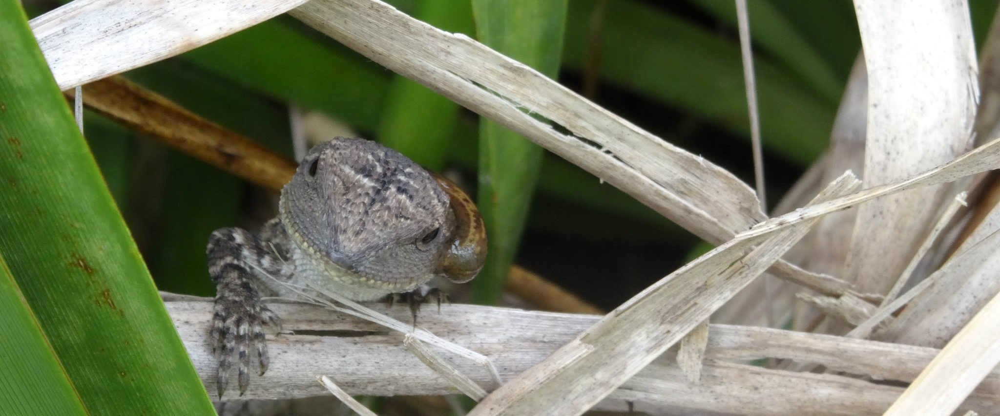

Lecturing
- MATH2021 - Vector Calculus and Differential Equations, 2024
- MATH2022 - Linear and Abstract Algebra, 2023
- MATH5410 - Special Topics in Applied Mathematics, 2022
Supervision
- Peter Lavilles and Jackson Mitchell-Bolton, physics interdisciplinary project: Nonlinear Waves, 2024, with Long Qiang, Martijn de Sterke (USYD) and Neil Broderick (UoA)
- Hugh Lavers, summer research project: Monodromy, cubic surfaces and singularities, 2024
- Martin Ong, summer research project: Eckardt point configurations of Fricke and Klein's cubic, 2024
- Lei Qu, summer research project: Heun polynomials and hyperbolic polygons, 2023, with Harini Desiraju

Jacky Dragon,
Royal National Park, Australia